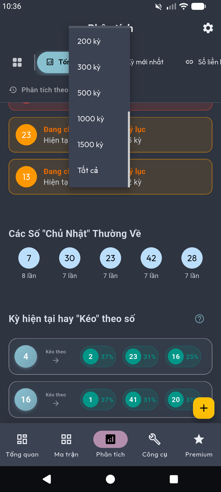

Unlimited Data
Phá bỏ rào cản 100 kỳ quay. Tiếp cận toàn bộ kho dữ liệu lịch sử để đưa ra quyết định chính xác nhất.
Tại sao cần nhiều kỳ quay hơn?
Trong thống kê xổ số, mẫu dữ liệu càng lớn thì quy luật càng rõ nét. Với bản Premium, bạn không còn bị giới hạn ở 100 kỳ quay gần nhất.

10
Kỳ
50
Kỳ
100 Kỳ
200
Kỳ
500
Kỳ
1000
Kỳ
Tất
cả
Lợi ích vượt trội
- Nhận diện các con số "gan" lâu ngày chính xác hơn.
- Phân tích chu kỳ lặp lại trong dài hạn (6 tháng - 1 năm).
- Biểu đồ xu hướng mượt mà, không bị nhiễu bởi các biến động ngắn hạn.
- Tự do tùy chỉnh số lượng kỳ quay phù hợp với chiến thuật riêng.